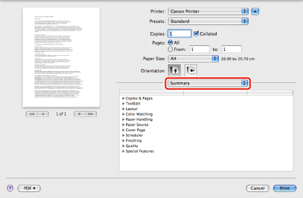

Checking the Current Print Settings
You can display all the currently specified settings in the [Print] dialog box. This feature is useful to confirm the printer driver settings before printing documents.
1.
From the [File] menu of the application software, select [Print].
The [Print] dialog box is displayed.
2.
In each pane, specify the printer driver settings with which you want to print a document.
3.

The [Summary] preferences pane is displayed.
4.
Check the settings for each pane.
5.
If you want to modify any of the settings, change those settings in the appropriate panes.
6.
Click [Print] in the [Print] dialog box.